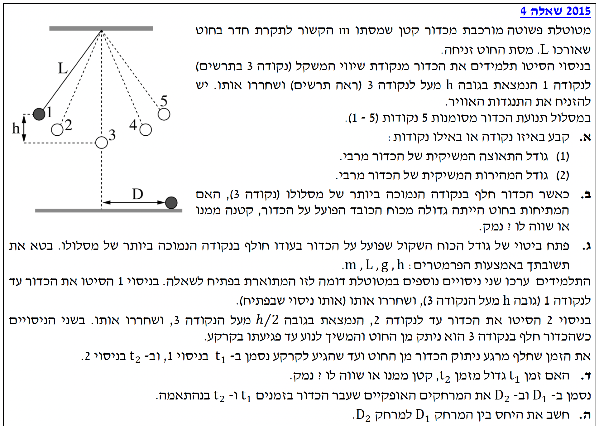
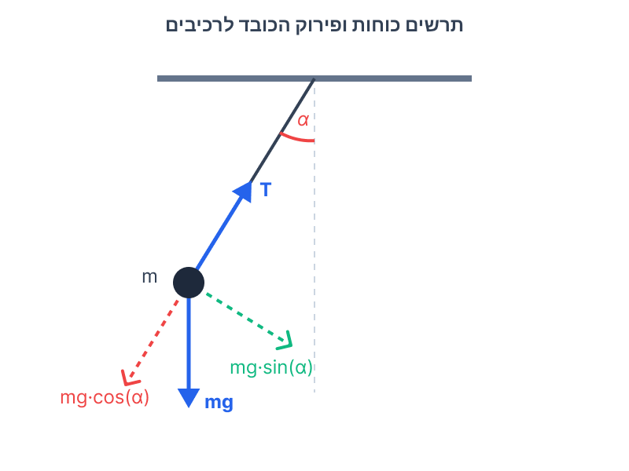
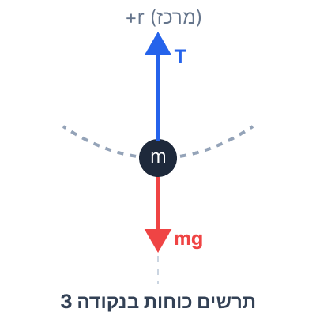
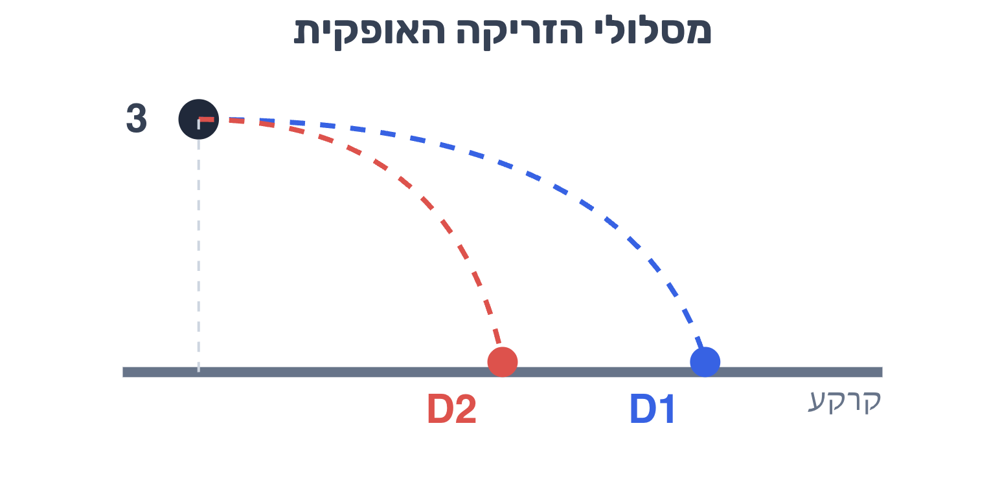

נושאים: מטוטלת פשוטה, תנועה מעגלית, שימור אנרגיה ותנועה במישור המאונך (זריקה אופקית).
לפנינו שאלת בגרות קלאסית ויפה המשלבת מספר נושאים ממכניקה. בשאלה זו אנו מנתחים תנועה של מטוטלת פשוטה. החלק הראשון מתמקד בתנועה המעגלית (באנרגיות וכוחות), והחלק השני מתאר את מה שקורה כאשר החוט נקרע, והכדור עובר למצב של נפילה חופשית מסוג "זריקה אופקית". ניגש לכל סעיף בצורה מסודרת, שלב אחר שלב.

עלינו לקבוע באיזו נקודה (1 עד 5):
(1) גודל התאוצה המשיקית של הכדור מירבי.
(2) גודל המהירות המשיקית של הכדור מירבי.

הכוח היחיד שפועל בציר המשיק למסלול (ציר התנועה) הוא הרכיב המשיקי של כוח הכבידה. אם נסמן ב-\( \alpha \) את הזווית בין החוט לאנך, נקבל לפי החוק השני של ניוטון:
\[ \Sigma F_T = mg \sin(\alpha) = m a_T \]מכאן שהתאוצה המשיקית היא:
\[ a_T = g \sin(\alpha) \]גודל התאוצה \( a_T \) יהיה מירבי כאשר פונקציית הסינוס מקבלת את הערך המירבי שלה עבור התנועה הנתונה, כלומר כאשר הזווית \( \alpha \) היא הגדולה ביותר. זה קורה בנקודות הקצה של התנועה.
ראשית, נציין שמכיוון שהכדור נע במסלול מעגלי (אורך החוט \( L \) נשאר קבוע), וקטור המהירות שלו תמיד משיק למסלול בכל רגע נתון. כלומר, אין תנועה בכיוון הרדיאלי ולכן גודל המהירות הכוללת של הכדור שווה תמיד לגודל המהירות המשיקית (\( v = v_T \)).
כעת, כדי למצוא היכן גודל המהירות הוא מירבי, נזכור שהיות ופועלים על המערכת רק כוח הכבידה (כוח משמר) וכוח המתיחות של החוט (שפועל תמיד במאונך לכיוון התנועה ולכן לא מבצע עבודה), מתקיים חוק שימור אנרגיה מכנית.
נקבע את מישור הייחוס של האנרגיה הפוטנציאלית בנקודה הנמוכה ביותר (נקודה 3), כך ששם \( h=0 \) ו- \( U_G = 0 \).
\[ E_{Total} = E_k + U_G = \text{Const} \]ככל שהגוף יורד גובה, האנרגיה הפוטנציאלית קטנה, ולכן האנרגיה הקינטית (ולפיכך המהירות) גדלה. גודל המהירות (שהוא כאמור המהירות המשיקית) יהיה מירבי בנקודה שבה האנרגיה הפוטנציאלית היא מינימלית.
הכדור חולף בנקודה 3 (הנקודה הנמוכה ביותר במסלולו). הוכחנו בסעיף הקודם שבנקודה זו לכדור יש מהירות גדולה מאפס (\( v_3 > 0 \)).
האם המתיחות בחוט (\( T \)) גדולה מכוח הכובד (\( mg \)), קטנה ממנו או שווה לו? ויש לנמק.

בנקודה הנמוכה ביותר, הכדור מבצע תנועה מעגלית שמרכזה נמצא למעלה (בנקודת התלייה). לכן, קיימת תאוצה רדיאלית שכיוונה כלפי מרכז המעגל (למעלה).
נבחר ציר \( y \) חיובי כלפי מעלה (לכיוון מרכז המעגל). משוואת הכוחות לפי החוק השני של ניוטון בציר הרדיאלי היא:
\[ \Sigma F_R = m a_R \] \[ T - mg = m \frac{v^2}{L} \]מכיוון שבנקודה זו המהירות שונה מאפס (\( v > 0 \)), הביטוי \( m \frac{v^2}{L} \) הוא בהכרח חיובי (גדול מאפס).
\[ T - mg > 0 \] \[ T > mg \]הכדור משוחרר ממנוחה מגובה \( h \). רדיוס התנועה הוא אורך החוט \( L \).
לפתח ביטוי לגודל הכוח השקול שפועל על הכדור בנקודה 3, תוך שימוש בפרמטרים \( m, L, g, h \) בלבד.
בנקודה 3 (הנקודה הנמוכה ביותר), אין רכיב משיקי לכוח הכבידה (החוט אנכי). לכן התאוצה המשיקית היא אפס. הכוח השקול הוא אך ורק הכוח הרדיאלי (הצנטריפטלי):
\[ \Sigma F = \Sigma F_R = m \frac{v^2}{L} \]המהירות \( v \) אינה חלק מהפרמטרים המותרים לנו בתשובה, ולכן עלינו להביע אותה באמצעות הנתונים האחרים. לשם כך, נשתמש בחוק שימור אנרגיה מכנית מנקודה 1 (שחרור) לנקודה 3 (הכי נמוכה). נקבע \( U_G=0 \) בנקודה 3.
בנקודה 1: מהירות אפס ולכן רק אנרגיה פוטנציאלית: \( E_1 = mgh \).
בנקודה 3: גובה אפס ולכן רק אנרגיה קינטית: \( E_3 = \frac{1}{2}mv^2 \).
\[ E_1 = E_3 \] \[ mgh = \frac{1}{2}mv^2 \]נכפול ב-2 ונחלץ את הריבוע של המהירות:
\[ v^2 = 2gh \]נציב את הביטוי שקיבלנו עבור \( v^2 \) אל תוך משוואת הכוח השקול:
\[ \Sigma F = m \frac{(2gh)}{L} \] \[ \Sigma F = \frac{2mgh}{L} \]לקבוע האם \( t_1 \) גדול, קטן או שווה ל- \( t_2 \), ולנמק.
כאשר החוט נקרע בנקודה 3, לכדור יש רק מהירות אופקית (כיוון התנועה משיק למסלול בנקודה התחתונה). כלומר, המהירות ההתחלתית בציר האנכי (ציר \( y \)) בשני הניסויים היא אפס: \( v_{y0} = 0 \).
הכדור מבצע תנועה של "זריקה אופקית" (בציר \( y \) זו נפילה חופשית). נגדיר ציר \( y \) חיובי כלפי מטה, כאשר נקודה 3 היא בראשית (\( y_0 = 0 \)). התאוצה היא תאוצת הכובד: \( a_y = g = 10 \text{ m/s}^2 \).
משוואת התנועה בציר האנכי היא:
\[ y = \frac{1}{2}gt^2 \]נסמן את המרחק האנכי מנקודה 3 לרצפה כ- \( H \). זמן הנפילה לקרקע מתקבל כאשר \( y = H \):
\[ H = \frac{1}{2}gt^2 \implies t = \sqrt{\frac{2H}{g}} \]מכיוון שנקודה 3 נמצאת באותו מרחק \( H \) מהרצפה בשני הניסויים, ותאוצת הכובד \( g \) זהה, זמן הנפילה אינו תלוי במהירות האופקית של הכדור!
לחשב את היחס \( \frac{D_1}{D_2} \).

בציר האופקי הכדור לא חווה כוחות (התנגדות אוויר זניחה), ולכן המהירות האופקית קבועה, ושווה למהירות שבה נותק בנקודה 3.
המרחק האופקי נתון על ידי הנוסחה: \( D = v \cdot t \).
נציב את הגבהים ההתחלתיים אל תוך הביטוי למהירות בנקודה 3 הנתון לנו מסעיף ג':
עבור ניסוי 1 (גובה התחלתי \( h \)): המהירות האופקית היא \( v_1 = \sqrt{2gh} \).
עבור ניסוי 2 (גובה התחלתי \( h/2 \)): המהירות האופקית היא \( v_2 = \sqrt{2g \cdot \frac{h}{2}} = \sqrt{gh} \).
כעת, נכתוב את משוואות המרחק לשני הניסויים:
\[ D_1 = v_1 \cdot t = \sqrt{2gh} \cdot t \] \[ D_2 = v_2 \cdot t = \sqrt{gh} \cdot t \]נחשב את היחס ביניהם. שימו לב איך הזמן \( t \) והפרמטרים \( g \) ו- \( h \) מצטמצמים כליל:
\[ \frac{D_1}{D_2} = \frac{\sqrt{2gh} \cdot t}{\sqrt{gh} \cdot t} \] \[ \frac{D_1}{D_2} = \frac{\sqrt{2} \cdot \sqrt{gh}}{\sqrt{gh}} \] \[ \frac{D_1}{D_2} = \sqrt{2} \]